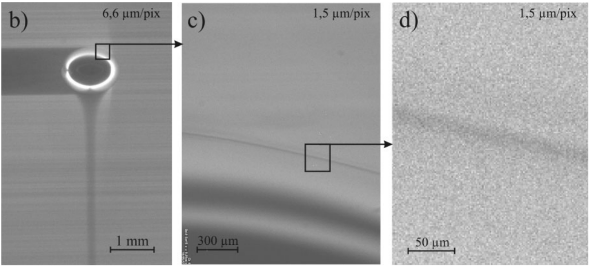

A hybrid approach to compute convection-dominated mass transfer at rising bubbles
Andre Weiner, andre.weiner@yahoo.de
Prof. Dr. rer. nat. Dieter Bothe, bothe@mma.tu-darmstadt.de
Slides available at: andreweiner.github.io/reveal.js/gofun2020.html
Gas-liquid reactors

micro reactor
size: millimeter
source: SPP 1740
prediction of
- mass transfer
- enhancement
- mixing
- conversion
- selectivity
- yield
- ...

bubble column reactor
size: meter
source: R. M. Raimundo, ENI
High Péclet number problem
U. D. Kück, M. Schlüter, N. Räbiger:
Analyse des grenzschichtnahen Stofftransports an frei aufsteigenden Gasblasen (2009)
Specimen calculation
$d_b=1~mm$ water/oxygen at room temperature
- $Pe = Sc\ Re = \nu_l / D_{O_2} \cdot U_b d_b/\nu_l \approx 10^5 $
- $$ Re\approx 250;\quad \delta_h/d_b \propto Re^{-1/2};\quad\delta_h\approx 45~\mu m $$
- $$ Sc\approx 500;\quad \delta_c/\delta_h \propto Sc^{-1/2};\quad\delta_c\approx 2.5~\mu m $$
$\delta_h/\delta_c$ typically 10 ... 100
feasible simulations up to $Pe\approx 1000$ (3D, HPC)
Outline
- Hybrid approach overview
- Volume-of-Fluid simulations
- Shape parametrization and approximation
- Velocity at the interface
- Single-phase flow dynamics
- Single-phase mass transfer
- Summary and outlook
Hybrid approach overview
Hybrid approach overview
Volume-of-Fluid simulations
Characteristic bubble shapes
Shape parametrization - simple
Shape approximation
Velocity at the interface
Single-phase flow dynamics
Mathematical model
Single-phase mass transfer
Mathematical model
Summary
- high-$Pe$ number problem (boundary layer)
- influence on numerical solution
- SGS modeling for complex reactions
- hybrid approach for high-fidelity reference data
- validation with complex bubble shapes
- qualitative and quantitative agreement with experiments
- new understanding of dynamic surfactant adsorption
- well documented, fully reproducible, public research results and methods
- pathway paved for data-driven solutions in computational fluid dynamics
Outlook
- (data-driven) modeling for the liquid bulk
- assessment for dynamic interfaces
- application to related boundary layer problems
THE END
Thank you for your attention!
Get in touch: andre.weiner@yahoo.de
Website: myheutagogy.com
From first of May 2020: Flow modeling and control, ISM, TU Braunschweig